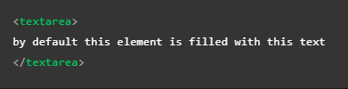
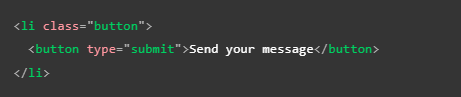

Formularios HTML
Textarea
-
El elemento "textarea" se caracteriza por ser un cuadro de texto de multiples lineas con una extenciaón virtualmente infinita, (sus dimenciones nunca cambian pero se puede navegar por el texto), es importante resaltar que pese a que su función es similar a un elemento "input" posee dos diferencia bastantes significativas con este ultimo, la primera consisten en que este elemento conserva cualquier salto de linea que se ingrese en el texto, la segunda diferencia radica en la estructura del codigo de la etiqueta "textarea" en sí, ya que no se trata de un elemto cerrado como "input", si no que requiere de una etiqueta de cierre adecuada, esta diferencia entre ambas etiquetas cambia la foma en que se incorpora un texto predeterminado en cada una, la forma en que esto se define en estas etiquetas es la siguiete:


Nota: Por las caracteriticas del elemento "textarea" pese a que se puede anidar contenido HTML, CSS y JS en su interior todo se representa como si fuese contenido de texto din formato.
Atributos
Textarea cuenta con tres atributos exclusivos para poder definir su representación del texto:
cols: Define el ancho del control de texto en base a las columnas mostradas, este puede ser considerado un ancho incial ya que las dimenciones del elemento pueden ser cambiadas utilizando CSS, en caso de que este atributo no sea especificado su valor por defecto es 30
rows: Define el alto del control de texto en base a las filas mostradas, en este caso tambien se puede considerar que se trata de un alto inicial ya que las dimenciones nuevamente pueden ser cambiadas aplicando estilos CSS, en caso de que este atributo no sea definido su valor por defecto es de 10
-
wrap: Define la envoltura del texto del elemento, cuenta con dos valores posibles los cuales son:
soft: Indica que el texto enviado no sera envuelto pero a su vez el texto representado por del navegador si lo estara
hard: Indica que tanto el texto enviado como el representado estan envueltos y desactvados por lo que deja de envolver
Modificar su tamaño utilizando CSS
Para cambiar las dimenciones del elemento "textarea" se utiliza la propiedad "resize" la cual puede adoptar cualquiera de los siguientes valores.
both: Se trata del valor predeterminado y permite cambiar el tamaño horizontal y verticalmente
horizontal: Permite cambiar el tamaño del elemento horizontalmente
vertical: Permite cambiar el valor del alemento verticalmente
none: No permite cambiar el tamaño del alemento
block y inline: Se tratan de valores experimentales wue permiten cambiar el tamaño en bloque o en linea en función del la dirección del texto
Button
-
Por ultimo pero no menos importante se encuentra el elemento "button", se trata del un boton el cual puede ser configurado para realizar varias acciones, un ejemplo de su estructura es el siguiete.

Al igual que el elemento "input", "button" acepta el atributo "type", el cual puede tomar cualquiera de tres valores:
Submit: Al hacer clic en el boton cuando tenga indicado un valor "submit" los datos de formulario seran enviados a la dirección(URL) definida por el atributo "action" del elemto "form"
Reset: Al dar clic en el boton mientras posea este "type" todos los elementos del formulario (widgets) se restableceran a su valor por defecto, desde el punto de vista de UX esto es un mala practica, lo mejor es solo incluirlo en los casos en los que de verdad sea nesesario su implementación
Button: El valor button por si mismo literalmente no hace nada, ya que la función de esta opción permitir crear una funcionalidad personalizada con JavaScript
Nota: Tambien se puede crear un boton usando el elemento "input" con el atributo "type", el cual posee siertos valores los cuales mostraran a el "input" como un boton, sin embargo la diferencia radica en que la etiqueta "button" permite contenido HTML completo, lo que significa un contenido de boton más completo y creativo.
Select
-
Este elemento consiste en un cuadro de selección con uno o más elemtos de opción como elementos secundarios, de los cuales cada uno espesifica una de las opciones del "select", este elemento secundario se trata de un elemento "option", en otras palabras el "select" es un cuadro de seleción, cada una de las opciones de este es definida por una etiqueta "optión" las cuales se encuentran alvergadas en el interiro de la etiqueta "select".

Si es necesario mostrar alguna de las opciones como dato selecionado por defecto se puede defimir utilizando el atributo "selected" en el "option" que lo contenga.
Tambien es posible anidar los elementos "option" dentro de una etiqueta "optgroup" con el fin de agrupar las opciones que posean algun tipo de relación entre sí, por lo tanto si se incorpora un elemento "optgroup" dentro del "select" este mostrara a aquellos elementos "option" que se encuentren en su interior como un grupo de opcines, como se puede apreciar a continuación.

Nota: Para mostrar un encabezado en los grupos de opciones se utiliza el atributo "label" en el alemento "optgroup".
Nota: Los encabezados de los grupos de opciones unicamente son eso y no son seleccionables como opción.
Los elementos "select" cuantan con otros atributos particulares los cuales son:
-
value: Este en caso de que se utilise define el verdadero valor del dato que se enviara con el formulario, por lo tanto asigna el valor implicito de la opción, se utiliza en aquellas situaciones en las que sea necesario que el usuario visualise un valor pero sea más eficiente enviar otro como se puede ver en el ejemplo

Nota: en caso de que no se aplique este atributo el contenido del elemento "option" se enviara como valor de esta opción.
-
size: permite definir el numero de opciones visibles en el elemento "select" cuando este no se encuentre seleccionado
Nota: Por defecto su valor es 1.
-
multiple: este atributo permite que sea posible el selecionar más de una opción a la vez, para hacerlo el usuario debe de mantener presionada la tecla Ctrl/kbd>
Nota: Todos los navegadores que son compatibles con la etiqueta "select" tambien lo son con el atributo "multiple".
Datalist
-
El elemento "datalist" o lista de datos se trata de un elemento el cual brinda al usuario diversas opciones que pueden ser ingresadas en un cuadro de texto, no se trata de un controlador en sí, se trata de un elemento complementario para cuadros de texto, a diferencia del elemento "select" el "datalist" tiene la función de autocompletar el texto del usuario, para alvergar las opciones del elemento se utiliza el elemento "option" al igual que en los "select", su estructura es la siguiente:

Como se puede ver en el ejemplo el controlador utilizado es un "input" de tipo text, el cual se vincula con el elemento "datalist" para que este realise su función de auto completado y lista en el cuadro de texto, la forma de vincular ambos elementos es atrabes del uso del "id" del "datalist" y del atributo "list" del alemento "input", para que ambos elementos esten correctamente vinculdos ambos atributos deben de coincidir.
A continuación se muestra un ejemplo de inplementación de este elemento:
Nota: Este elemento esta soportado por la gran mayoria de los navegadores sin embargo en las verciones antiguas puede que este no sea el caso, pero para estos casos existe un truco para asegurar la inplementación de la lista, el truco consisten en anidar un "select" justo debajo del "datalist", en los navegadores compatibles todo elemento dentro de un "datalist" que no sea un "option" es igorado sin embargo cuando el navegador no soporta la etiqueta se visualizara el "select" que se encuantra anidado.
Nota: El elemento "datalist" puede ser utilizado en conjunto con cualquier otro elemento siempre y cuando este requiera una entrada de datos por parte del usuario sin embargo el efecto de la etiqueta en otos elementos no esta estandarizado por lo tanto se podria comportar deferete segun desde cual navegador se ejecute.
Progres
-
Se trata de una barra de progreso la cual representa un valor númerico, el cual cambia con el tiempo hasta alcanzar un valor maximo, el cual se define con el uso del atributo "max", este elemento se utiliza entodas aquellas situaciones en las que se requiera representar el progreso de una tarea, por ejemplo el porcentaje de descarga deun archivo.

Nota: el contenido dentro de este elemento realmente solo es una alternativa para aquellos navegadores que no sean compatibles con esta etiqueta así como para que los motores de leectura los lean.
Meter
-
Se trata de una barra de medidor, representa un valor fijo delimitado entre valores minimos y maximos, este valor se representa visualmente como una barra, para saber como se ve esta barra comparamos el valor con otros valores establecidos.
-
Los atributos "low" y "high" dividen el rango en tres partes:
La parte inferior se encuentra entre los valores min y low
La parte media del elemento se encuentra entre los valores low y high
La parte superior se encuentra entre los valores high y max
-
El atributo "optimun" define el valor optimo para el elemento medidor, junto con los atributos "low" y "high" define que parte del rang se prefiere:
Si el valor optimo se encuentra en la parte inferior esta se considera la parte preferida, la parte media se considera promedio y la parte alta una mala area
Si el valor se encuentra en la parte media esta se considera la parte preferida, mientras que las partes inferior y superior se consideran promedio
Si el valor optimo se encuentra en la parte superior esta se considera la parte preferida, la parte media se considera una parte promedio y la parte baja se considera una mala area
Segun el area en la que se encuentre el valor optimo el color de la barra cambiara:
Si se encuentra en la parte preferida la barra será de color sera verde
Si se encuentra en la parte promedio la barra será de color amarilla
Si se encuentra en la parte mala la barra será de color roja
Nota: un ejemplo de uso seria la representación visual del espacio de memoria de un disco, al tener poco espacio ocupado se visualiza verde, al esta a la mitad de su capacidad amarillo y al estar casi lleno se visualiza rojo.

Nota: el contenido dentro de este elemento realmente solo es una alternativa para aquellos navegadores que no sean compatibles con esta etiqueta así como para que los motores de leectura los lean.
Nota: el soporte para esta etiqueta es bueno, entre los navegadores grandes el unico que no lo soporta es internet explorer.
Estructura de un formulario
Como ya se ha visto en ejemplos anteriores es muy comun e inclusi recomendable el no utilizar unicamnte elemtos especializados para estructrarlos, por ejmplo es muy común el uso de listas ("ul" "ol" "li") para estructurarlos así como elemtos "p" titulos y subtitulos (h1, h2, h3...) e incluso se recomienda el utilizar contenedores como "div" o "sección" para estructurar el formulario en secciones.
Basicamnte estructrar un formulario consiste en hayar una estructrar que le permite al desarrollador crear formularios accesibles y utlizables por todo tipo de usuarios, una de las unicas recomendacione es estrucrarlo de forma que cada sección separada en funcionalidad debe estar contenida en un contenedor propio con elemtos de conjunto de campo para incluir los botones de opción.


Atributos Basicos
Los elemtos de entrada de texto son los widget más basicos de un formularios, permiten que el usuario ingrese texto en ellos, pos defecto estos elemtos unicamente soportan texto sin formato (negra cursiva etc) por lo que todos los elemtos que soporten texto enriqusido son personalizados con la implemtación de CSS y de JavaScript.
Algunos atributos comunes en los elementos de entrada de texto son:
Readonly: En elementos en los que se aplique este actributo, el valor de entrada no podra ser modificado por el usuario, a su vez el valor de este sera envado junto a los datos proveidos por el usuario
Disabled: Este atributo derectamente desactiva el widget, por lo que no se podra modificar el valor inicial de este elemento, a su vez el valor de este no sera enviado junto a los datos ingresados por el usuarios
Placeholder: El valor de este atributo es el valor de entrada del elemto en cuastión
Size: Define el tamaño fisico del cuadro de texto
maxlength: Define la cantidad maxima de caracteres que recibira el elemento de texto
Spellcheck: Activa la función de corección de ortografia del navegador (si es que este lo soporta)
Algunos atributos comunes en los elementos de un formulario son:
Autofocus: Este atributo define que el elemento en el que se aplique tendra el foco de entrada cuando se carga la paguina, solo un elemento asociado a un formulario puede usar este atributo, su valor por defecto es "false"
Disabled: Desactiva un elemento para que el ususario no pueda interactuar con este, su valor por defecto es "false"
Form: Este atributo vincula un elemento externo con un formulario del mismo documento, para hacer correctamente el valor del atributo debe ser igual al "id" del formulario al que se dese vincular el elemento, esta relación funciona incluso si el elemento se encuentra anidado dentro de un formulario diferente
Name: El nombre del alemto se envia junto con los datos del formulario
Value: Define el valor inicial del elemento
Envio de datos de un Formulario
Como ya se ha dicho anterior mente el envio de los datos se realiza segun el valor de los atributos "action" y "method", sin embargo el primer paso para enviar los datos del formulario es proveer a todos los elemtos (controladores) con nombres propios, estos son muy importantes tanto en el lado del cliemte com en el lado del servidor, ya que le indican al navegador que nombre darle a cada dato, por parte del servidor los datos se manejan en relaciones de nombre-valor.
Ejemplo